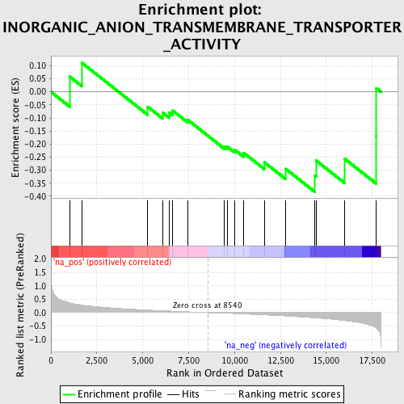
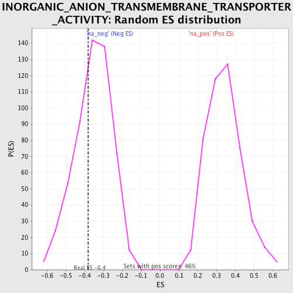

| | | Dataset | GSEA_Cushing_prerank_FC |
| Phenotype | NoPhenotypeAvailable |
| Upregulated in class | na_neg |
| GeneSet | INORGANIC_ANION_TRANSMEMBRANE_TRANSPORTER_ACTIVITY |
| Enrichment Score (ES) | -0.3831342 |
| Normalized Enrichment Score (NES) | -1.0811518 |
| Nominal p-value | 0.3494424 |
| FDR q-value | 0.603421 |
| FWER p-Value | 1.0 |
Table: GSEA Results Summary

Fig 1: Enrichment plot: INORGANIC_ANION_TRANSMEMBRANE_TRANSPORTER_ACTIVITY
Profile of the Running ES Score & Positions of GeneSet Members on the Rank Ordered List

Fig 2: INORGANIC_ANION_TRANSMEMBRANE_TRANSPORTER_ACTIVITY: Random ES distribution
Gene set null distribution of ES for INORGANIC_ANION_TRANSMEMBRANE_TRANSPORTER_ACTIVITY